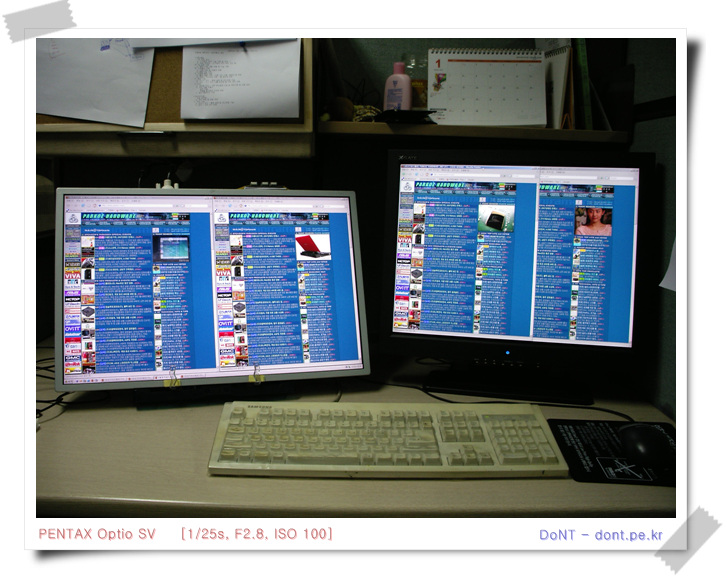
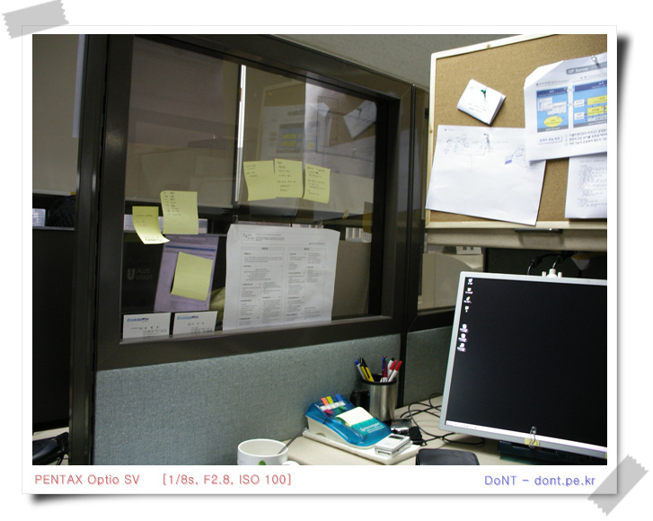
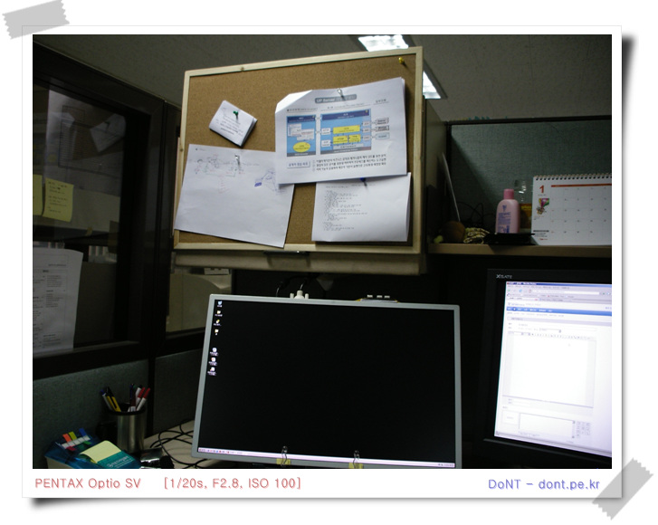
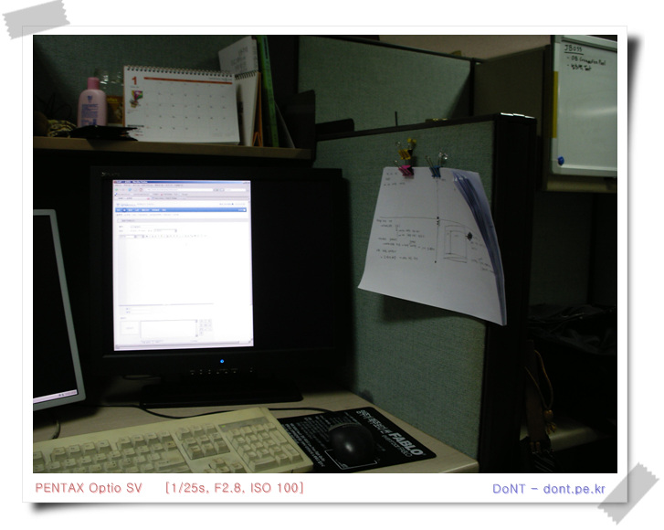
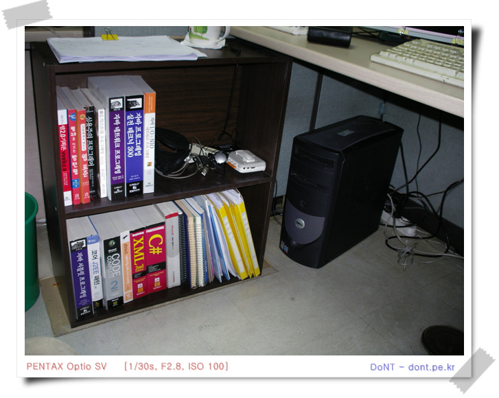
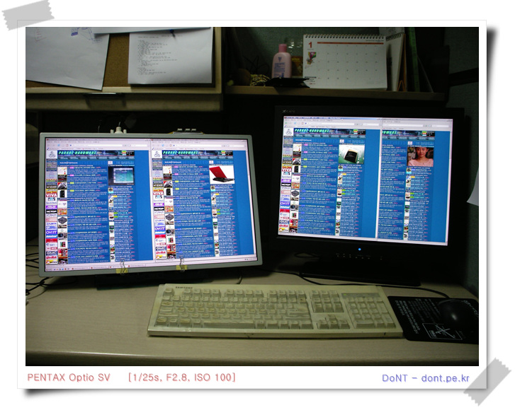
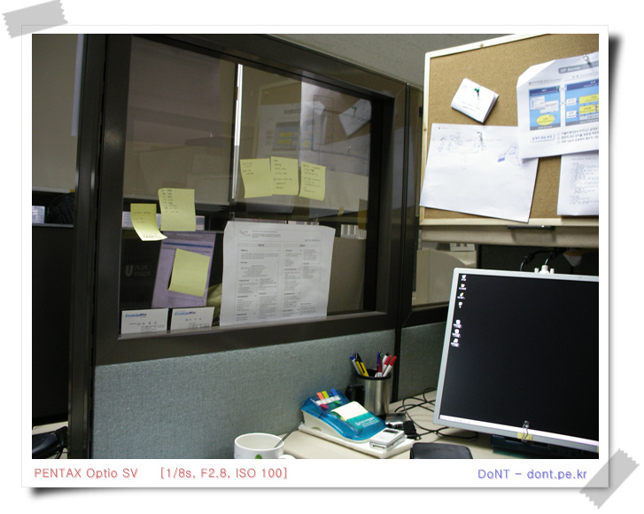
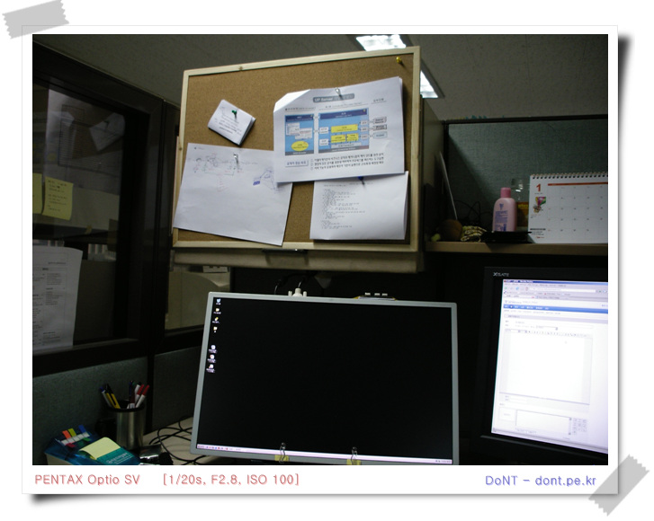
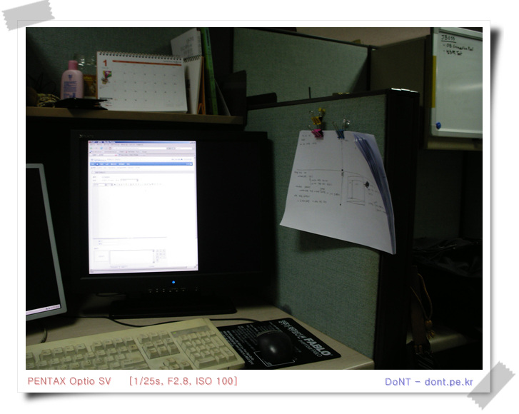
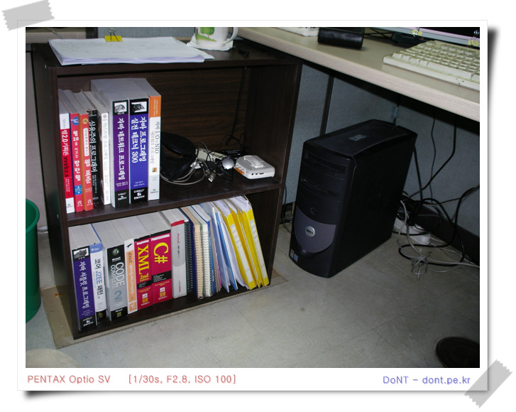

나의 개발환경
지금 나의 개발 환경
- 공간 : 파티션으로 나눠진 소음을 차단 못하는 공간, 낮은 천장, 그리고 약한 형광등 불빛
- 도구 : 23인치 diy lcd + 20인치 lcd, 15K scsi 하드를 추가한 dell 컴퓨터
- 기타 : 포트스잍을 붙일 수 있는 왼쪽 유리벽, 집게로 종이를 집고 있는 오른쪽 파티션 벽, 메모지를 붙일 수 있는 정면의 코르크 판, 그리고 왼쪽 챗상밑에 있는 작은 책장하나.





지금 나의 개발 환경




